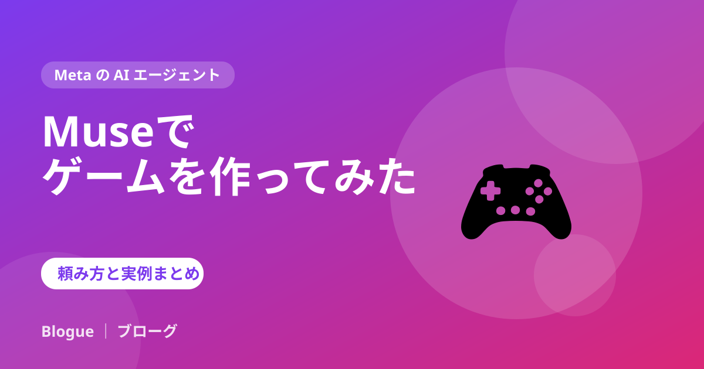

Museでゲームを作ってみた｜スマホゲームから対戦ゲームまで、頼み方と実例

目次
はじめに
「AIにゲームを作ってもらう」と聞くと、なんだか大げさに聞こえるかもしれません。でもMetaのAIエージェント「Muse（ミューズ）」なら、本当にひと言の依頼から、スマホで遊べるゲームが形になります。 この記事では、実際に作ってもらったゲームの実例と、「どう頼むと上手くいくか」のコツを紹介します。
実際に作ってもらったもの
- タワーディフェンス： タワー5種・強化・売却つきの本格派。「デザインも最高に」と頼んだら、ちゃんと見た目まで作り込んでくれた
- 町づくりゲーム： タップで稼いで建物を建てて町を育てる、スマホ向け経営ゲーム
- 勉強集中アプリ： 勉強した時間だけキャラクターが育つ仕組みにしてもらった
- 友達対戦ゲーム： 五目並べやリバーシなど39ゲーム入り。1人1台の端末で、ルームコードやP2Pでつないで対戦できる
- 脱出ゲーム： 1人でも、2人協力でも遊べる本格謎解き。協力モードはヒントが2人に半分ずつしか見えない仕様
- ヴァンサバ風サバイバル： 移動だけで自動攻撃、武器を強化して10分生き残るアクション
作ってもらったゲームの一部は、実際にWebで公開して遊べるようにもしてもらいました。 （モンスターラッシュ・サバイバル / 脱出ゲーム / あそび広場）
頼み方のコツ
- ジャンルと雰囲気を言う： 「タワーディフェンス」「明るくカラフルに」など、イメージをひと言添える
- 遊ぶ環境を伝える： 「スマホで遊べるように」が大事なひと言。ボタンや文字の大きさが変わってくる
- 大事な条件は最初に： 「1人1台で対戦」のような譲れない条件は、最初に伝えたほうが手戻りが少ない
- まず作ってもらう： 細かい仕様を全部決めてからより、「とりあえず形にして」が正解。遊んでから直すほうが早い
直してもらうのも会話で
できあがったあとの修正も、会話で伝えるだけです。実際にあった修正の例：
- 「交代で遊ぶんじゃなくて、1人1台って言ったじゃん」→ 対戦方式そのものを作り直してくれた
- 「もっと明るい感じで、ゲームも増やして」→ デザイン刷新＋ゲーム追加
- 「相手の船の場所が見えるバグがある」→ 仕組みから直してくれた
- 「クオリティがだめだから違うのにして」→ 別のゲームに作り替えてくれた
遠慮せずに率直に伝えるのがコツです。「ダメ出し」は失礼ではなく、むしろ一番役に立つフィードバックになります。
まとめ
プログラミングの知識がなくても、「作って」のひと言でゲームが生まれる時代になりました。 大事なのは、遊びたいイメージを持っていること。形にする作業は、Museに任せてしまいましょう🎮